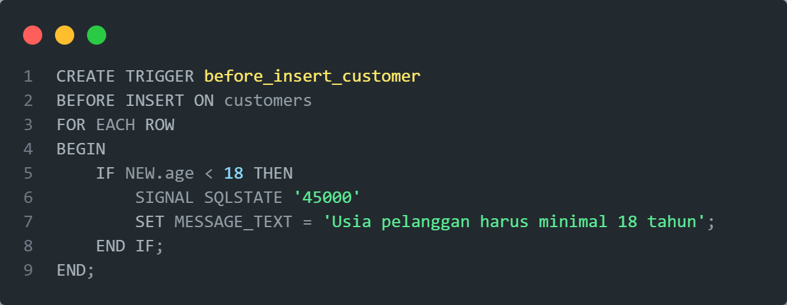
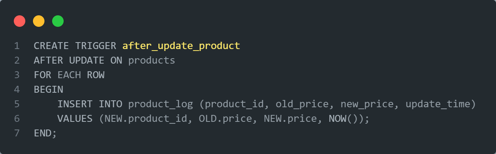

Apa itu Trigger ?
Trigger dalam MySQL adalah sebuah fitur yang memungkinkan kita menjalankan serangkaian perintah SQL secara otomatis ketika terjadi suatu peristiwa tertentu pada sebuah tabel. Peristiwa yang dimaksud bisa berupa tindakan menambahkan, memperbarui, atau menghapus data.
Perbedaan Trigger SEBELUM dan SESUDAH
Trigger SEBELUM :
- Dijalankan sebelum perubahan data dilakukan.
- Berguna untuk:
- Memeriksa apakah data yang akan disimpan sudah benar.
- Menghitung nilai secara otomatis sebelum data disimpan.
- Mencegah perubahan data yang tidak sesuai dengan aturan.
Trigger SESUDAH :
- Dijalankan setelah perubahan data dilakukan.
- Berguna untuk:
- Mencatat perubahan data untuk keperluan audit.
- Memperbarui data di tabel lain yang terkait.
- Mengirim pemberitahuan setelah data berubah.
Mengapa Menggunakan Trigger?
- Menjaga Keakuratan Data : Memastikan data yang tersimpan selalu benar dan konsisten.
- Otomatisasi Tugas : Melakukan tugas berulang secara otomatis tanpa perlu perintah manual.
- Menerapkan Aturan Bisnis : Mengatur agar data selalu mengikuti aturan yang telah ditetapkan.
- Melacak Perubahan Data : Mencatat setiap perubahan data untuk keperluan analisis atau pelaporan.
Contoh Penggunaan Trigger
- Validasi Data 
- Otomatisasi Tugas 
Trigger di atas akan mencegah penambahan data pelanggan dengan usia kurang dari 18 tahun.
Trigger ini akan mencatat setiap perubahan harga produk ke dalam tabel log.